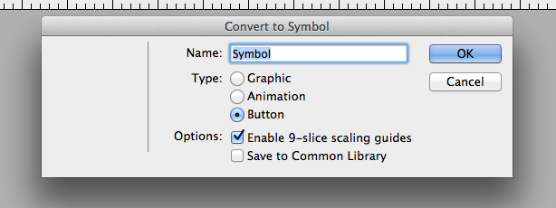
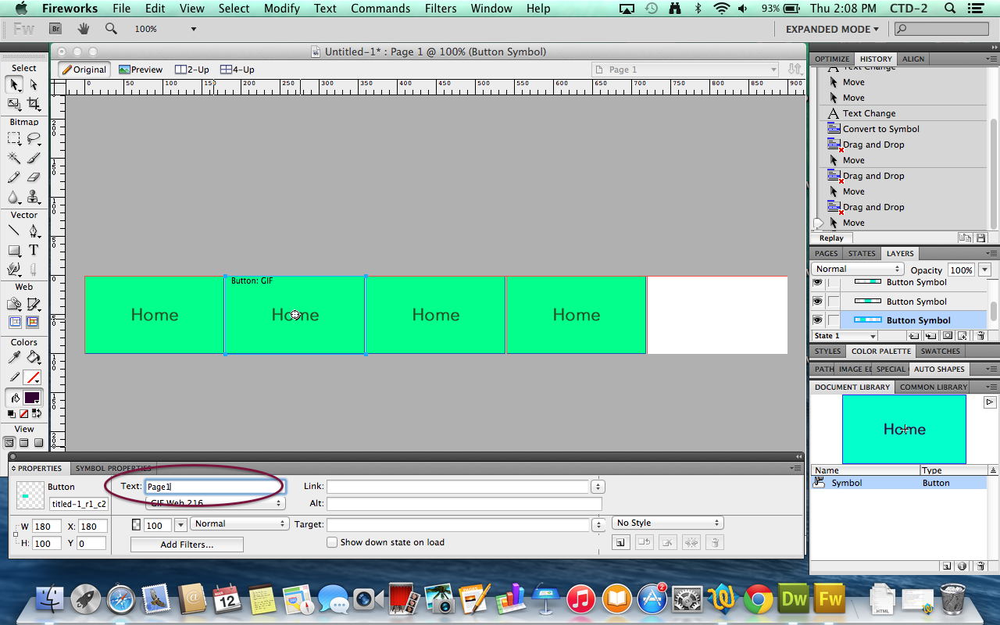
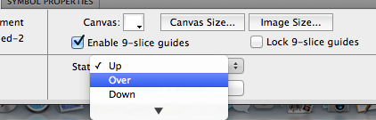
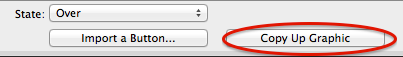

we started to make navigation button
make a square with the rectangle tool and write "home" inside.
select the rectangle and click the right and click "convert to symbol".
if you clicked the "convert to symbol", a small box will appear. when it appears, click "button" and "Enable 9-slice scaling guides".
after that drag the "home" button from the right (this will you have the same button easily.)
since it was copied from the original, the buttons will all name "Home". So in order to change it, go to the bottom, click the box and change it
in order to let the button to look like a button, go to filters. in there, there will be lots of option. go to the bottom where there's a box called "bevel and emboss" and then click "Inner bevel".
go to stat and "change" up to "over"
after that, click "copy up graphic". when you click this, you can change the color of the button without changing the original color. Repeat this with "down" too.
when the button is finished, go to "file", find "preview in browser" and click "preview in safari" to look at your work.
the button will eventually work, you just have to link it with the page you want. and if you want the hovering, you have to copy and paste the link of the button to dreamweaver
the navigation button will be placed below the title.
the navigation bar would not be on every page